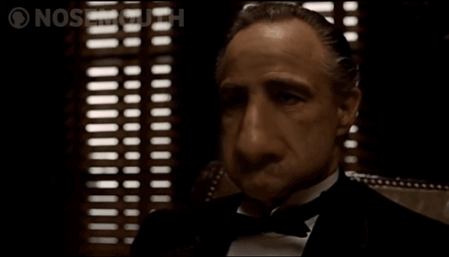

Крестный отец - кратко о книге

Крестный отец — Роман об одной из самых могущественных мафиозных семей Америки прошлого века –
семье Корлеоне. Многим известен фильм, так что пора приниматься за чтение.
Вито Андолини после гибели отца перебрался из Сицилии в США и взял себе новое имя — Корлеоне. Товарищи Клеменца и Тессио втянули его в преступную деятельность. Вместе они провернули несколько удачных акций, но местный преступник Фануччи, узнав об этом, стал требовать мзду. Корлеоне для вида согласился с его требованиями и даже заплатил, но затем убил Фануччи. Тем самым Корлеоне приобрёл авторитет у местных жителей, начавших обращаться к нему со своими проблемами. За несколько лет Корлеоне создал мафиозный клан и неуклонно расширял свою империю. Его легальный бизнес — поставка оливкового масла, однако общий контроль клана Корлеоне простирается на многие сферы, включая властные и силовые структуры.
Действие романа начинается в августе 1945 года. Особняк дона Вито Корлеоне полон гостей: лидер самого влиятельного в Нью-Йорке мафиозного клана выдаёт замуж дочь Констанцию (Конни). Кроме неё у главы семьи есть сыновья — Сантино (Сонни), считающийся вероятным преемником Крёстного отца; Фредерико (Фред), преданный общему делу, но не обладающий смелостью старшего брата; Майкл, выбравший для себя другую стезю — он поступил добровольцем в морскую пехоту, воевал, после демобилизации по ранению поступил в Дартмутский университет.
Вскоре после свадебных торжеств Крёстный отец принимает мафиози Вергилия Солоццо. Тот готов начать продавать в США наркотики и просит Крёстного отца дать ему взаймы денег и обеспечить прикрытие со стороны судей, политиков и полицейских, подконтрольных Корлеоне. Дон отвечает отказом. Солоццо рассчитывает, что после смерти неуступчивого дона власть в семье Корлеоне перейдёт к более сговорчивому и менее опытному Санни. На Крёстного отца совершается покушение. Майклу, пришедшему в больницу навестить отца, удаётся сорвать очередное покушение. Санни приступает к ответным действиям, убив сына дона Таттальи. Выясняется, что за Солоццо стоят не только «пять семей» американской мафии, но и продажный капитан полиции Макклоски.
Майкл понимает, что Солоццо слишком опасен, он нацелен на убийство дона Корлеоне. Он соглашается встретиться с Солоццо и на встрече в ресторане убивает Солоццо и Макклоски. Майкл покидает Америку и укрывается на Сицилии. Начинается война между кланом Корлеоне и Пятью семьями, которая заходит в тупик. Воспользовавшись предательством Карло Рицци, мужа Конни, Татталья заманивают в ловушку и убивают Санни. Майкл едва не гибнет от руки предателя Фабрицио на Сицилии. Дон Корлеоне собирает глав самых крупных американских «семей» и призывает их прекратить войну. Ему приходится принять условие дона Барзини о поддержке наркотрафика и отказаться от мести семье Татталья. Барзини с самого начала стоял за Татталья и Солоццо, он мечтает занять место Корлеоне.
Дону Корлеоне удаётся снять с Майкла обвинение в убийстве Солоццо и Макклоски. Вернувшись в Нью-Йорк, Майкл в течение трёх лет перенимает опыт у отца, удалившегося от дел, вникает в особенности бизнеса, обрастает связями. Дон Корлеоне не скрывает перед ним, что перемирие с представителями враждебных синдикатов — мера вынужденная и временная: «Месть — это блюдо, которое нужно подавать холодным». Корлеоне постепенно переводят свой бизнес в Лас-Вегас. Тем не менее дождаться, когда реализуются их общие замыслы, Крёстный отец не успевает: он скоропостижно умирает от инфаркта.
Барзини и Татталья нарушают условие перемирия, начиная бизнес на территории Корлеоне. Тессио предлагает стать посредником на переговорах между Барзини и Корлеоне, но Майкл знает, что Тессио — предатель. Он предпринимает давно подготовленную атаку. Его люди расправляются с Барзини, Филиппом Татталья, несколькими их подручными, находят и убивают Фабрицио, расправляются с Карло Рицци. Дон Майкл обретает репутацию главы самого мощного клана США. Корлеоне продают свой бизнес и имущество в Нью-Йорке и окончательно перебираются в Лас-Вегас.